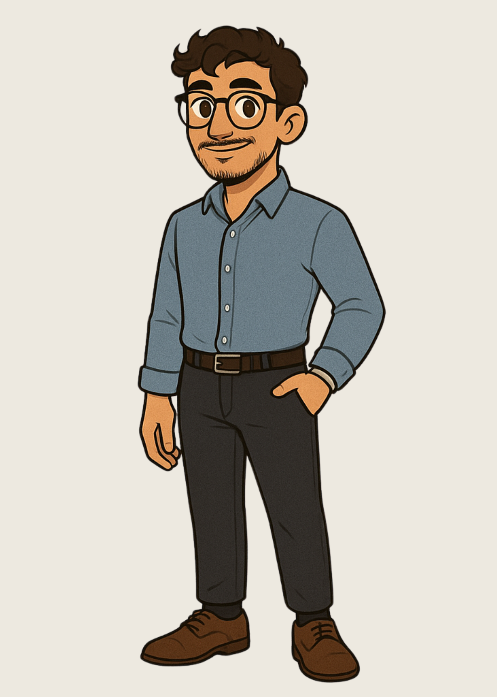

Maria Oliveira
Natural de Fortaleza, Maria sempre se destacou por sua criatividade e paixão por tecnologia. Desde os 12 anos já criava blogs e editava vídeos por hobby. Atualmente, cursa Desenvolvimento Web e sonha em atuar com design de interfaces e acessibilidade digital.
Participa ativamente de projetos da faculdade, liderando iniciativas que misturam arte, código e impacto social. No tempo livre, ama desenhar, jogar RPG e viajar com os amigos.
Minha Jornada
- 2018: Primeiro contato com programação usando HTML e CSS
- 2021: Início da graduação em Desenvolvimento Web
- 2023: Criação do projeto “Web para Todos” sobre acessibilidade
- 2024: Participação em hackathon e estágio em design UI
Você sabia?
- 🧠 Aprendeu inglês sozinha assistindo séries
- 🎨 Ama desenhar personagens de anime
- 🎮 Tem uma coleção com +100 jogos
- ✈️ Já viajou para 6 estados brasileiros